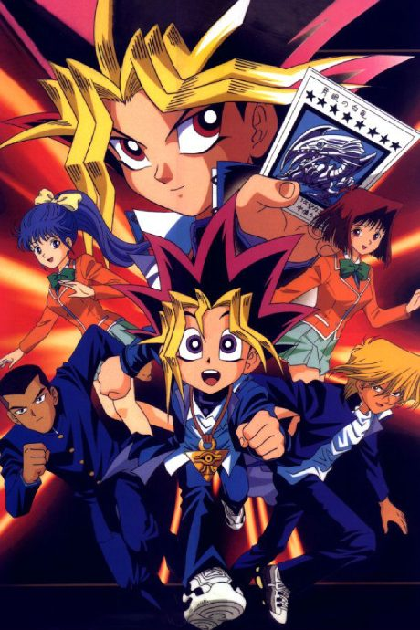
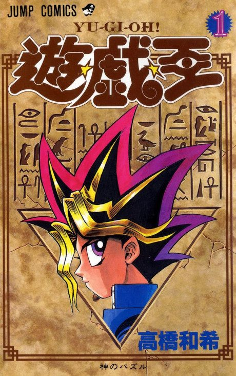

Yu☆Gi☆Oh!
遊☆戯☆王
We haven't found where the anime ends in the manga yet.
7.0AniList score
—Animeter, no votes yet
27episodes
Filler
91 of 225 episodes are filler and 7 mix canon with filler.
Episodes225
Canon127
Filler91
Mixed7
123456789101112131415161718192021222324252627282930313233343536373839404142434445464748495051525354555657585960616263646566676869707172737475767778798081828384858687888990919293949596979899100101102103104105106107108109110111112113114115116117118119120121122123124125126127128129130131132133134135136137138139140141142143144145146147148149150151152153154155156157158159160161162163164165166167168169170171172173174175176177178179180181182183184185186187188189190191192193194195196197198199200201202203204205206207208209210211212213214215216217218219220221222223224225
CanonMixedFillerRecap
Skip list (filler episodes)
13, 25, 33, 41–45, 74, 80, 98–121, 136, 144–198, 225Sources: Anime Filler List